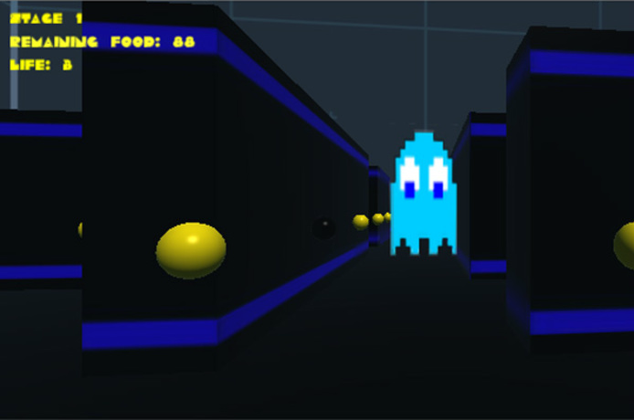

<!-- About Section -->
    <section class="success" id="personal">
        <div class="container">
            <div class="row">
                <div class="col-lg-12 text-center">
                    <h2>Personal</h2>
                    <hr class="star-light">
                </div>
            </div>
            <div class="row">
                <div style="float:left; width:250px">
                    
                    
                </div>
                <ul>
                    <li><p>Attended the Great Uni Hack in April 2015, in which me and my team
                        developed a <a href="http://challengepost.com/software/pacman-revisited"
                        style="color:blue" target="_blank">3D Pacman game</a> in under 36 hours.</p></li>
                    <li><p>Worked on a year-long Machine Learning project as part of my 3rd year
                        courses investigating the usage of the Counterfactual Regret Minimisation
                        algorithm for solving simplified games of Poker.</p></li>
                    <li class="page-scroll"><p>Worked on numerous other games and personal projects,
                        some of which can be found in my <a href="#portfolio" style="color:blue">
                        portfolio.</a></p></li>
                    <li><p>I greatly enjoy running recreationally and attended the Great Manchester
                        10K runs in 2013 and 2014 respectively, rasing money for the War Child
                        charity.</p></li>
                </ul>
            </div>
        </div>
    </section>
